Overview of eMission
Overview of eMission
Summary
eMission is a simple patient database for use by humanitarian medical missions.
- It works on most smart phones
- It works even with bad cell service or intermittent wifi
- It's really easy to use
- It's easy to add photos
- The team can share the information
- Security is build in
Examples:
To preserve patient confidentiality, only Fantasy creatures are shown
Main Menu:
You start from the Main Menu which is the jump-off point for patient records as well as some bookkeeping options.

Operation list:
One way to choose a patient is to pick from the list of scheduled or completed operations.
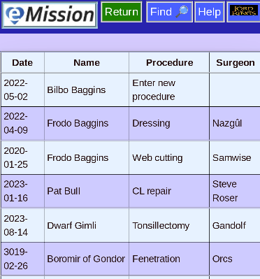
Patient menu:
Here is an example of a particular patient. You can see the operation, and enter followup pictures and updates.
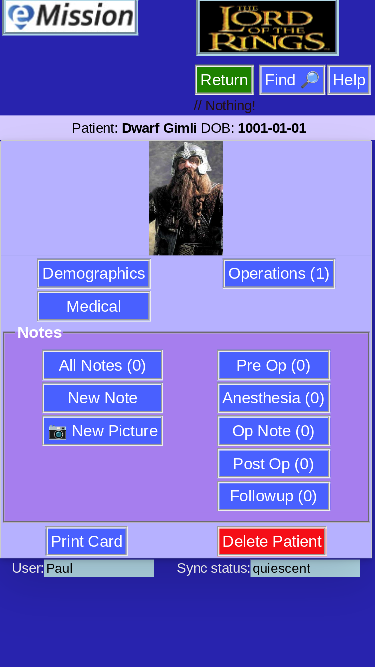
Getting Started with eMission
Install
There is nothing to install, per se, eMission runs completely in your browser
- Chrome, Firefox, Safari, Edge, Opera,...

Device
Lots of choices:
- Smart phone (iPhone or Android for example) or Tablet
- Laptop (Mac, Windows, Chromebook) or computer
Invitation
- Name, password and link from your mission leader. This will be an email or letter with either:
- QR code
- or text credentials

- Internet access (for the first time)
- The link will load all the information automatically into your browser
It's free
No license to agree to. No fee. Even the source code is free and available.
It's convenient
Internet access is only needed intermittently and data usage is relatively low.
Add A Patient
How do you add a new patient to the database?
- From the Patient List choose Add Patient 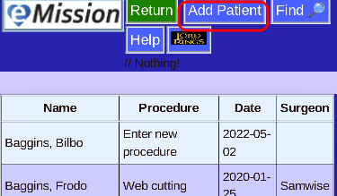
- Enter new patient identifiers 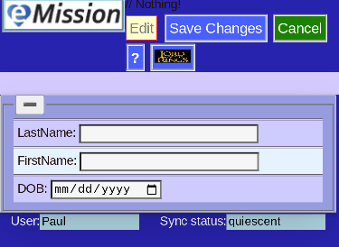
- Save Changes 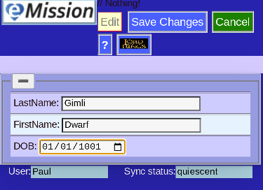
- Choose Demographics 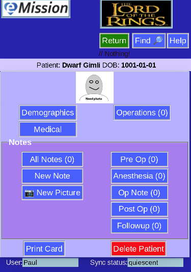
- Including a picture helps keeping records straight 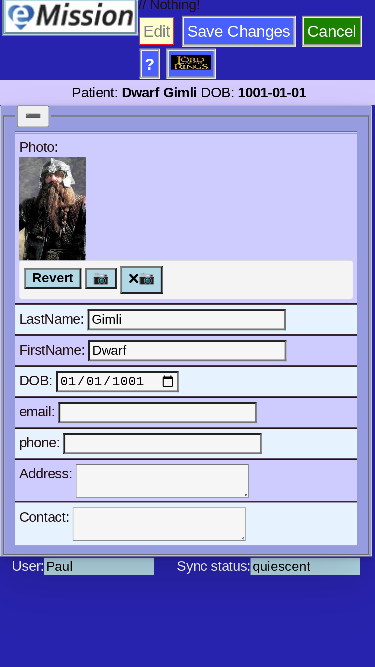
- Choose Medical for information on health
- Medical info also includes fields for the operation 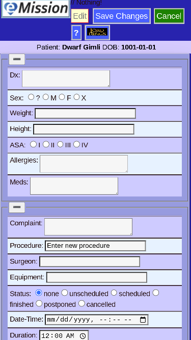
- Save Changes after completing record 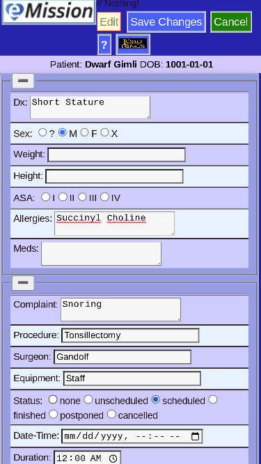
- New patient entry is complete!
- If a printed tracking card is desired, choose Print Card 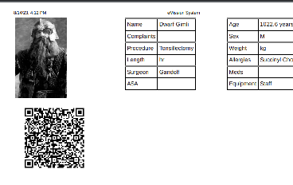
Edit A Note
Notes (and associated pictures) form an important element of the medical record. Notes are linked to a specific patient (or the mission experience).
To edit an existing note, first select a note from the list:
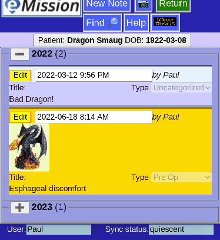
Click Edit on the note you want to edit:
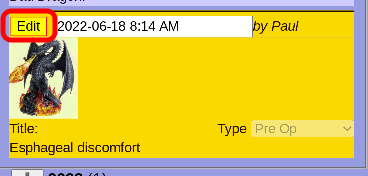
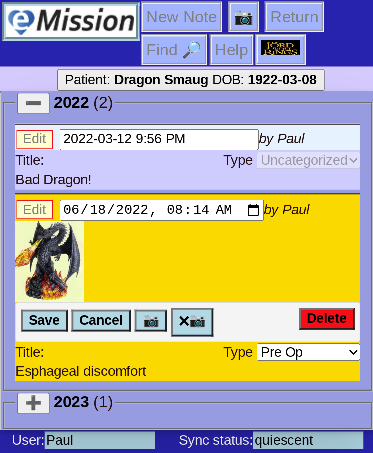
Two things happened:
- Many of the Header options are disabled during editing
- The note's display has changed, adding editing controls.
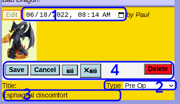
- The date field can be altered. It defaults to the date of note creation.
- The note category (e.g. Preop, Postop, ...) can be chosen
- The note text can be changed. This is free form text of any length
- A set of control buttons are displayed:
- Save your changes (and finish the edit)
- Cancel any changes
- Camera Add or change the picture
- xCamera Remove the picture
- Delete remove the entire note
Common Elements
All eMission pages have a common layout:
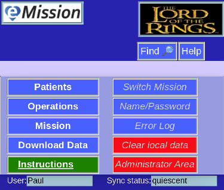
There are 4 main areas:
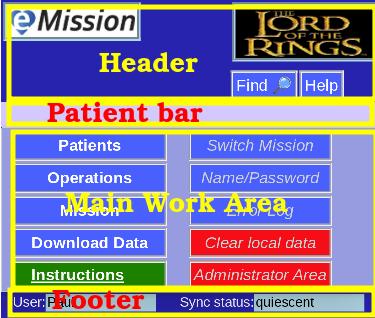
Header
This is the top area of each page. In it's simplest form:
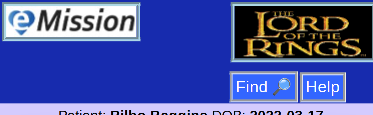
Which includes:
- eMission Button to reload the aplication and return to the Main Menu
- Mission Logo links to the organization's web site
- Find jumps to full text search through the mission database
- Help links to these instructions
On most pages, the Mission Logo will be smaller, and more options offered:
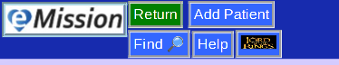
- Return usually returns to the previous page
- Save, Edit, Add may be choices depending on the context of the work area.
Patient Bar
Just under the Header is the Patient Bar
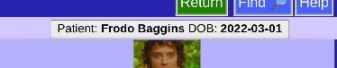
This shows the current selected patient which is especially useful when viewing notes and operations.
When editting Mission information, the Mission Name will be shown, instead.
Working Area
Footer
Located at the bottom of each screen, the footer:
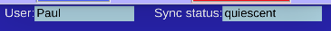
- User is your name. The one that gives you access to the server.
- Sync status shows the latest error message or network replication status.
- Click on Sync status to quickly jump to the Error Log.
Background Color
Under normal conditions, eMission is a lovely blue:
Except the advanced administrative area whch is green to distinguish it.
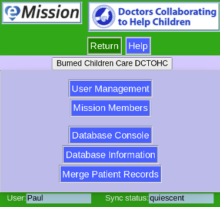
If the network is disconnected, however (perhaps poor wifi coverage) the background changes to violet:
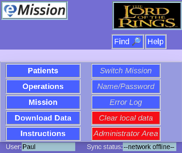
And finally, if your credentials are incorrect (or the database name or web address are wrong) this is signaled by red:
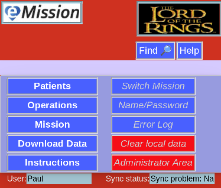
More detail can be seen in the Error Log
Main Menu
This is the main menu page.
The menu choices are in the center of the page.
Frequent Options (Left side)
- Patients Sortable list of all patients in the system
- Operations Sortable list of surgical operations performed or planned.
- Mission Information and notes on this Mission
- Download Data Export all data in various formats
- Instructions Link to Help System
Less Frequent (Right side)
- Switch Mission Use a different Mission database
- Name/Password Enter your credientials
- Error Log See current status report
- Clear local data Wipe Mission data off this device
- Administrator Area Edit Mission menbership and manage some database options
eMission button
The eMission Logo button in the upper corner of all pages should take you to this Main Menu
First Time Greeting
The first time you start eMission, you may see this page:
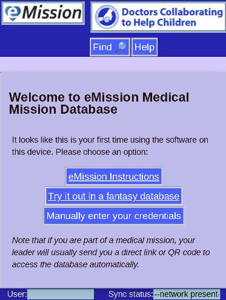
This means that eMission
- Has no stored information (cookies) about you
- You didn't start with a QR code that has you creditials
- You didn't start with a URL (from an invitation) that has credentials
If you are just exploring eMission, use Try it out in a fantasy database
If you know your name, password and other information, use Manually enter your credentials
Error Messages
When eMission seems to be acting strangely, it can be useful to view the error history and current status.
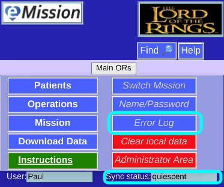
At the lower right corner is the current network status.
Click on that for the Error Log
(Or choose Error Log from the Main Menu)
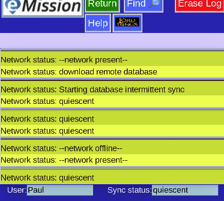
This shows the status starting at oldest (top) and newest at the end of the list.
Manually enter credentials
Often your credentials (name, password, database and server) are entered automatically from the QR code or link your Mission Leader gave you.
If you need to manually enter or correct them, choose Name/Password from the Main Menu

You can edit your information:
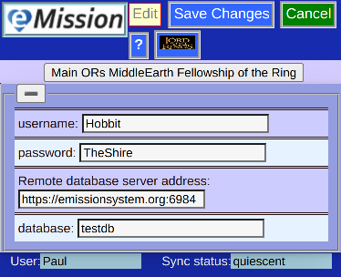
and press Save Changes
Patient
eMission is centered around patients. Their problems, operations, and progress.

Specifically, for each patient there is
- Medical and personal information
- A photograph for identification
- Operation records
- Notes of various types
- General
- PreOp
- Anesthesia
- OpNote
- PostOp
- Followup
Patient Menu
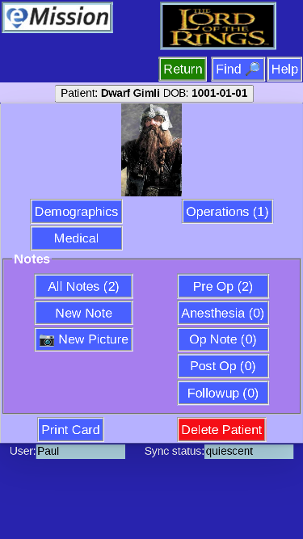
This is the main page for each patient. There are a number of choices:
- Patient information
- Demographics gives age, sex, and contact information
- Medical for medications, allergies
- Operations
- The number of operations is shown
- button advances to a list of the operations, and the change to add, delete or edit
- Notes
- All Notes shows the total number, and a full list of notes
- New Note and New Pciture are quick ways to add new content
- Note categories like Pre Op, Followup etc show the number in each category, and allow seeing a specific list
- Print Card to print a page with patient summary and a bar code link for easy patient management
- Delete Patient to eliminate this patient and all associated operations and notes
Patient List
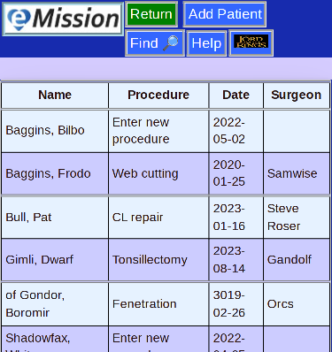
This is a sortable list of patients with the most recent operation shown.
Select any patient to see details, add information, print a card, or even delete.
There is also a button to Add Patient
Patient Menu
This is the main page for each patient. There are a number of choices:
- Patient information
- Demographics gives age, sex, and contact information
- Medical for medications, allergies
- Operations
- The number of operations is shown
- button advances to a list of the operations, and the change to add, delete or edit
- Notes
- All Notes shows the total number, and a full list of notes
- New Note and New Pciture are quick ways to add new content
- Note categories like Pre Op, Followup etc show the number in each category, and allow seeing a specific list
- Print Card to print a page with patient summary and a bar code link for easy patient management
- Delete Patient to eliminate this patient and all associated operations and notes
New Patient
This page is for the initial patient creation. The 3 elements:
- Last name
- First name
- DOB (date of birth)
Are for creating a unique internal ID identifying the patient's records.
A complete description for adding a new patient with all the steps including adding information, a picture and any planned procedures is found under Tasks in the Help Documentation.
Demographics
Demographics are useful patient identifiers like name, contact information and a picture.
Edit to start adding data, and Save Changes when done.
Medical Info
Here some useful medical data can be added, which may be useful for management and later mission summary.
For convenience, the first operation can also be entered. Both are shown on the page:
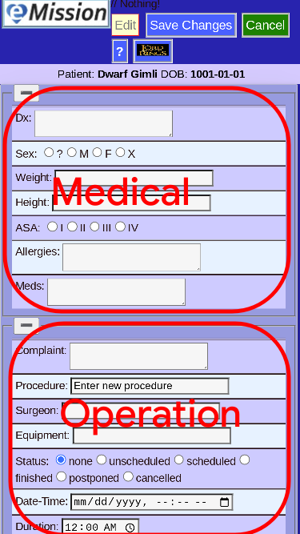
Notes
Like any medical record, notes allow for flexible documentation of the patient's condition and progress.
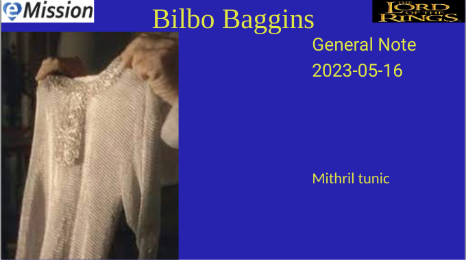
In eMission, notes can contain free-form text and pictures.
Notes also have:
- An associated patient (of course)
- A date (you can edit it, but otherwise the current date is used)
- A category (e.g. Pre-op, Anesthesia, Followup, etc)
New Note
Starting a new note
There are 2 ways to create a new note or photo:
From the Patient Menu
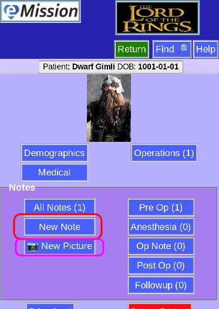
or from the Note List

Adding content
Once started, all the fields of the note can be added including
- text
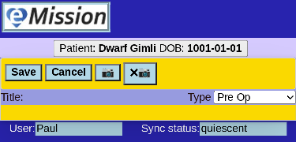
- images
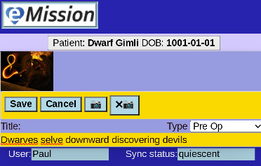
Press Save to add the note
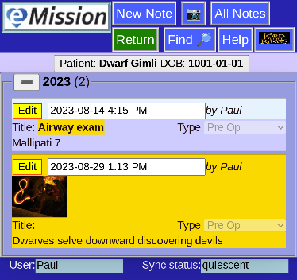
New Photo
Adding a new note
There are 2 ways to create a new note or photo:
From the Patient Menu
or from the Note List
Adding content
Depending on the device you are using:
- Camera or gallery will be opened
- File area will be shown
Take a picture, or select the existing image you want to use.
Edit A Note
Notes (and associated pictures) form an important element of the medical record. Notes are linked to a specific patient (or the mission experience).
To edit an existing note, first select a note from the list:
Click Edit on the note you want to edit:
Two things happened:
- Many of the Header options are disabled during editing
- The note's display has changed, adding editing controls.
- The date field can be altered. It defaults to the date of note creation.
- The note category (e.g. Preop, Postop, ...) can be chosen
- The note text can be changed. This is free form text of any length
- A set of control buttons are displayed:
- Save your changes (and finish the edit)
- Cancel any changes
- Camera Add or change the picture
- xCamera Remove the picture
- Delete remove the entire note
Note List
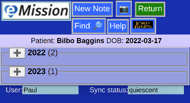
Use this page to view existing notes.
- The notes will be on the patient shown in the Patient Bar
- Depending on which list was chosen, this can be all notes, or just a certain category (like "Pre-Op")
- There are buttons to add a new note or photo in the page header.
Multiple years
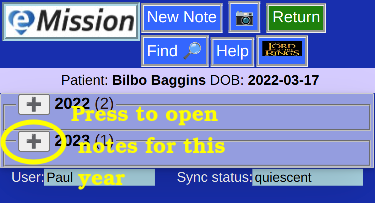
- If more than one year is represented in the notes, (i.e. subsequent missions or yearly followup) the note list will be presented collapsed
- The year and the number of notes in that year is shown
- Click on the "+" button to open a given year
Single year, or year selected
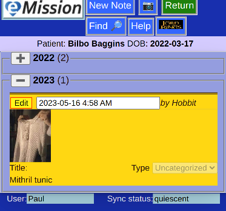
- For a single year, the note list is aleady expanded
- Each note can be read directly
- To edit the note, press the "Edit" button
Note List -- Single Type
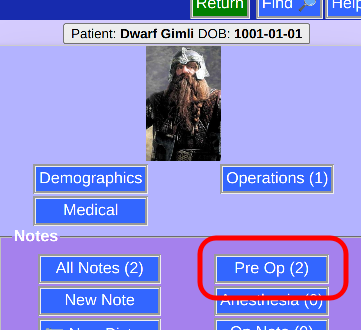
You can view notes of a single kind from the Patient Menu
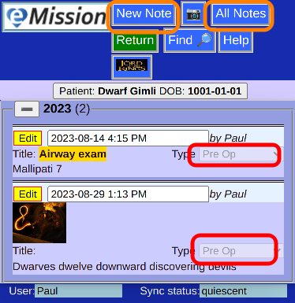
This brings the list of notes (notice that they are all "Pre-Op" in this case) that can be edited
To "break out" and see all notes. choose All Notes
Also a New Note will be of this type (Pre-Op) by default.
Operations
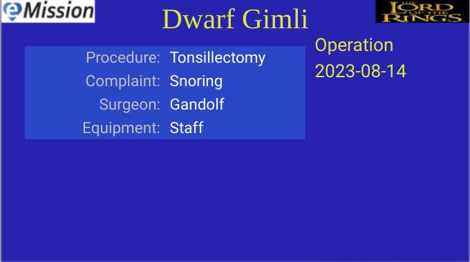
- Operations are a key part of many medical missions.
- Operations planned or performed should be entered
- Several fields are available (equipment, surgeon, laterality, ...)
- More detail and photos should be added as notes, e.g.
- Operative Notes
- Preop Notes
- Followup
- If no operation was yet done of planned, an placeholder operation Enter new procedure will be present
Full Operation List
A full list of operations. Click on one to review or edit.
- Each Operation is listed
- If a patient has no planned ot completed operations, just the placeholder Enter new procedure is shown
Operation List (for a specific patient)
From the Patient Menu, Operations will give a list of operations.
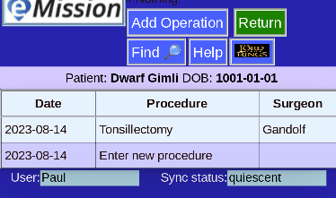
- Click on the operation to review or edit
- Use the placeholder Enter new procedure to add an operation
New Operation
Adding an operation is a choice from the patient's Operation List
It's also possible to add an operation directly when inputting medical information on a new patient.
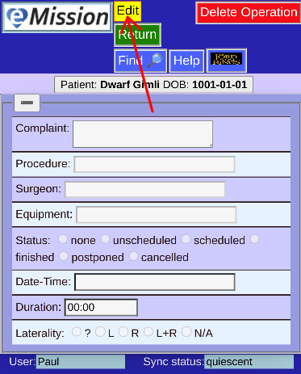
Basically a blank operation needs to be edited (press Edit)
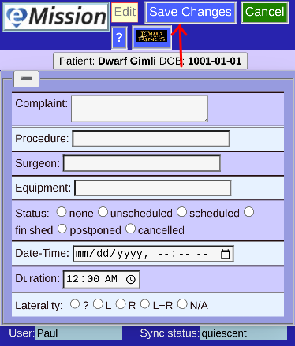
Save Changes when done
Operation Edit
Choosing an operation will show the details
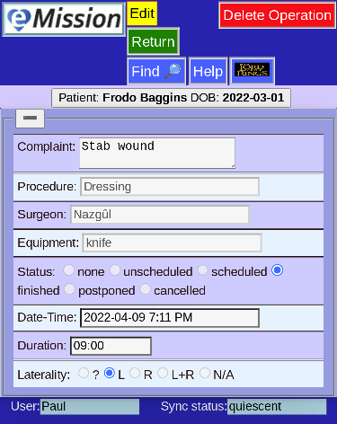
You have the options to Delete Operation or Edit
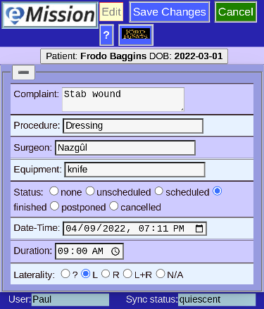
Once editing, the choices change. Save Changes to keep your work, or Cancel to make no change.
Mission Information
Each mission (which can span several years) should have general information included.
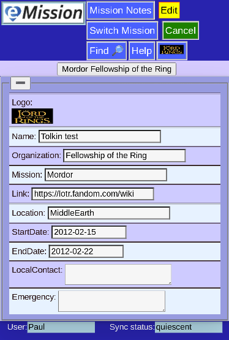
Pressing Edit lets you add important items (like the logo which helps branding and quick identification)
Other options include
- Mission Notes Notes and photos that apply to the whoe mission rather than a particular patient
- Switch Mission change the database for another one
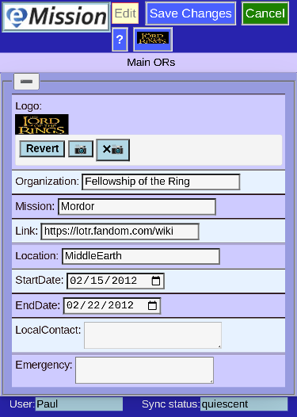
Remember to Save Changes if you are satisfied with your entries
Mission Notes
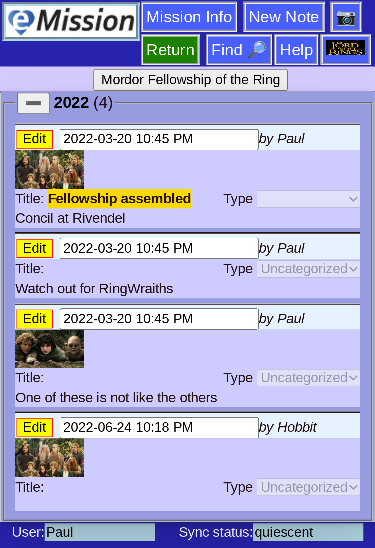
Just line Patient Notes, these are free text entries or pictures about your mission.
You can include
- Information on protocols and resources
- Pictures of the facilities, hosts, and participants
Switch Mission
Although this shouldn't be a frequent occurrence, you can switch to a different mission.
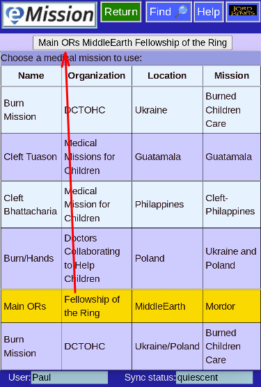
Note the the current mission is highlighted, and shown in the top bar.
- You will need access permission to the new mission to get it's data
- You will need internet connectivity and time to download the new mission data
Search
Every page has a Find button which takes you to a database search page.
Enter the word or phrase and press "Search". All the text fields in the Mission will be examined.
The records matched are shown. Click on any of them to jump to that page.
In this case, you can see that Gandolf matched two different types of records.
Download Menu
There are a number ways to get Mission information in a form usable for other programs
- Spreadsheet
- Useful as input into Excel
- Pure text
- CSV (comma-separated-values) format
- Presentation
- Useful as PowerPoint input
- PPTX format is a standard interchange
- Presented as one record per slide
- Backup
- This format is raw JSON
- Usable as input into Couchdb and possibly others
- Images are included as Base64 text
Speadsheet
- Useful for spreadsheets like Excel
- Purely text -- no images
- Uses an old and stable standard: CSV (comma separated values)
Presentation (PowerPoint)
- Creates a full slide show of all patients
- Can include operations
- Can include notes
- Images are included
- Useful for Powerpoint and other slide presentation programs
- Uses PPTX standard file format
- Rather slow process
Backup
This option downloads the entire database content in a standard JSON file format.
The information serves as a backup -- in can be loaded into the database program by a server administrator
Images are included as Base64 text -- so rather large
An example of the contents:
Administration
The main administrative task menu
- User Management
- for adding, editing, and deleting users
- needs SuperUser access
- Mission Members
- to modify user access to your mission data
- needs SuperUser access
- Database Console
- Direct database controls on the server
- needs SuperUser access
- Database Information
- metadata provided by the database program
- Merge Patient Records
- specialized routine
Super User (Top level access)
The level allows User administration (Add/Edit/Permissions) and database console access.
The page pops up automatically when this level is needed.
Enter password and press Save Changes to proceed.
User List
For SuperUser only:
- This shows a list of existing users across all missions
- AddUser at top allows adding a new user (obviously)
- Click on a user's row to edit that user's data
- The User's membership in the current mission is shown:
List Users for Membership
A direct way to assign users to your mission
This is a list of members, and their current role on your mission.
Simply check or uncheck membership.
There is also a link to Add User
New User
A blank User Edit form to fill out. Save Changes when done.
You will proceed to Send to User
Edit a User
Once created, you can edit a user's record, with some limitations.
- The user name cannot be changed (but you can create a new user if you wish)
- The Password can be changed, but not retrieved.
- If forgotten it must be created anew
- Leaving the password blank should not reset it
- Status applies to the currently listed mission
Press Edit to modify the record:
Press SaveChanges to proceed (or Cancel to back out)
Send User Info
After a patient is created or edited, this page is useful for user communication.
-
Main link can be problematic due to different email clients and modern security restrictions
-
Print for sending produces output like this:
Which can be sent, or saved as a PDF file (if you have that driver on your system).
Database Console
This is a link to the Couchdb database administration console on the remote server.
- Internet access is required
- Database Administration access (Superuser) is needed
- Expertise is needed. It is possible to make the whole eMission server not work.
Possible reasons to use this console:
- Create a new mission database
- Edit Users, and permissions (although it is probably easier in the program)
- Direct inspection/editing of records
- Set up replication to a backup couchdb server
Database Information
Some basic database information reported by the database program.
None of the fields are editable.
Merge Patient Records
This is a specialized procedure best left to the mission expert.
Sometimes the same patient was entered twice with slightly different identifiers.
- Two lists of patients are shown (from the mission records)
- The Merge Patient Records button is disabled
When a patient is chosen, the Name and record id is shown
In this case, Bilbo is a considered a duplicate patient name and we will next choose the patient to move the data to.
Now a From and To id have been chosen. The Merge Patient Records button is enabled.
Return to change your mind.
Security
Summary
eMission is a distributed database with a central server component and a field-based handheld or laptop component. While the system is aimed at ease of use in poorly connected environments, there are moderate security safeguards on data.
HIPPA
The Health Information Privacy Protection Act is a U.S. statute that requires health information access be restricted and privacy maintained. eMission satisfies some of the components ( secure transmission, authentication ) but full HIPPA compliance is an broader organizational protocol that requires certain policies, record keeping and other aspects beyond the of scope of eMission.
System components
Central database
- Should be in a physically secure environment.
- Runs on a (typically) linux instance either on the cloud or a central office
- The root user should have separate access from the database administrator, and be managed by ssh (OpenSSH) secured console.
- The database, couchdb is password secured for administrative and user access.
- couchdb offers database-level rather than record level control.
- Database administrative access is by password protected SSL web console.
- Database transactions to the field are by SSL-secured communication.
- Database replication for backup to an off-site server is easy to set up.
Communication
- All database and application communication is over https (SSL-secured) protocol.
Remote access
Setup
- Initial setup, including credentials are transferred as a URL.
- Modes of transmission include e-mail, QR code, or paper
- Revoking credentials only removes data changes, existing data is accessible locally.
Physical
- Any device with a modern web browser and at least sporadic network connection.
- Physical security is dependent on keeping the hand-held device at secured, and using device-based authentification. (E.g. password, fingerprint or face recognition.)
Software
- All transaction is within web browser (Google Chrome, Safari, Firefox, Edge, Opera) -- ECMAScript 11 level support required (~2017)
- Local copy of database and application is stored on the browser for PWA (Progressive Web App) support. Typically in browser cache for code, and indexDb for data.
- Software is completely provisioned from single site -- no content delivery networks or dependency chains.
- Communication is via SSL-secured web traffic.
Threats
- Eavesdropping and man-in-the-middle: Unlikely with SSL communication with public key credentials
- Data at rest: Secure on server, vulnerable on remote device
- Reading data: Possible with access. Revoking access only revokes seeing forward changes.
- Changing data: Possible with access (revocable)
- Auditing changes: Yes (built into couchdb design)
Possible Enhancements
Remote
Since the application lives entirely within the browser, using third-party browser-securing techniques will be effective:
- At-rest encryption (remote) (pouchdb add-on or browser add-on)
- 2-factor or biometric authentication using add-on products
Central
couchdb is a stable product with excellent security history. By design, access is whole-database granularity.
- At-rest encryption (server) using encrypted file-system
- Security techniques for remote administration access
- Swapping couchdb for alternative more-secure databases (IBM Cloudant, etc) that support the same replication protocol should be possible with only minor changes to initial access logic.